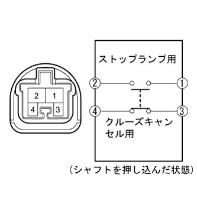

Stop Light Switch Assembly Inspection |
| 1. Inspect Stop Light Switch Assembly |
 |
Using SST (Toyota electrical tester), measure the resistance between each connector terminal when the shaft is operated.
| Tester Connection | Condition | Standard |
|---|---|---|
| 1 - 2 | Shaft not pushed in | Below 1 Ω |
| 1 - 2 | Shaft pushed in | 10 kΩ or higher |
| 3 - 4 | Shaft not pushed in | 10 kΩ or higher |
| 3 - 4 | Shaft pushed in | Below 1 Ω |